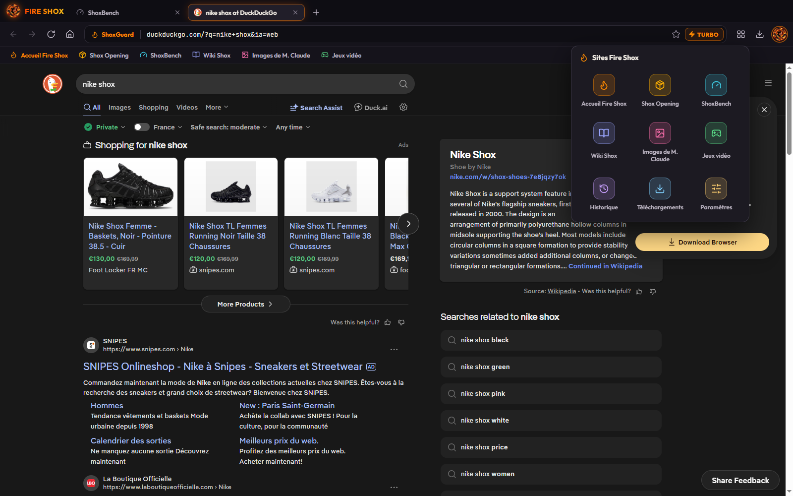

01
Le navigateur
Chromium sous le capot, des flammes par-dessus.
Le même moteur que les navigateurs les plus utilisés au monde : vos sites, vos vidéos, vos mails, tout marche. On a juste rajouté de quoi rester à température.
- Onglets
- Favoris
- Historique
- Téléchargements
- Mises à jour automatiques
- Bouton TURBO (effet placebo garanti)
